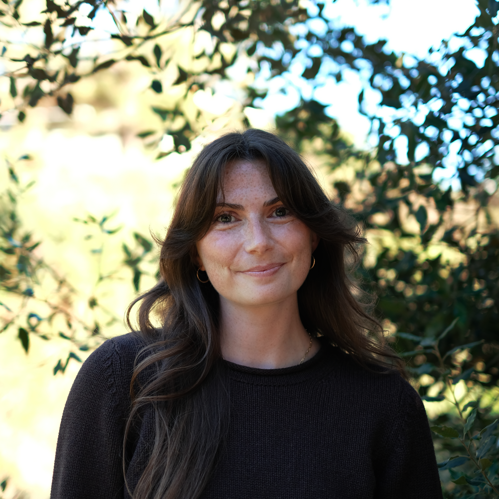
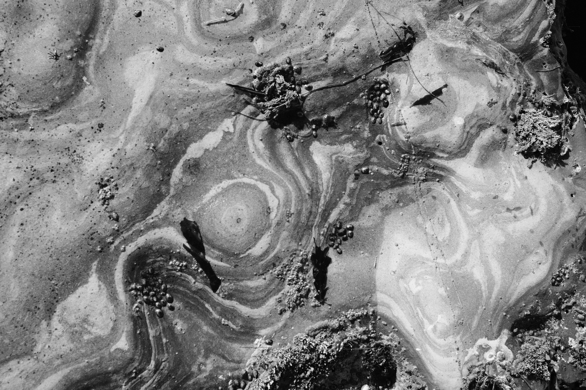
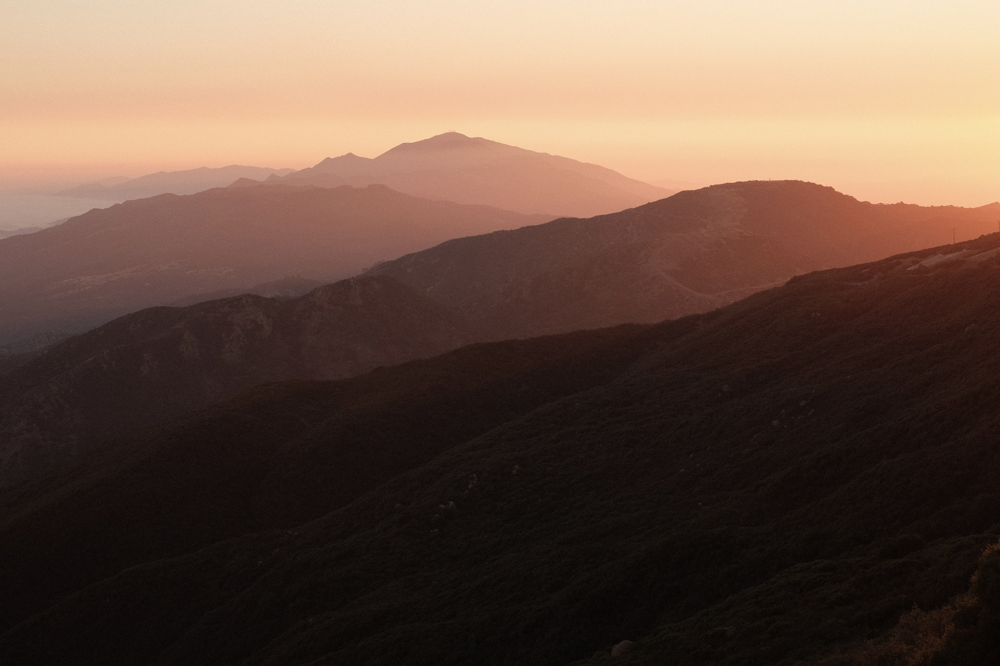
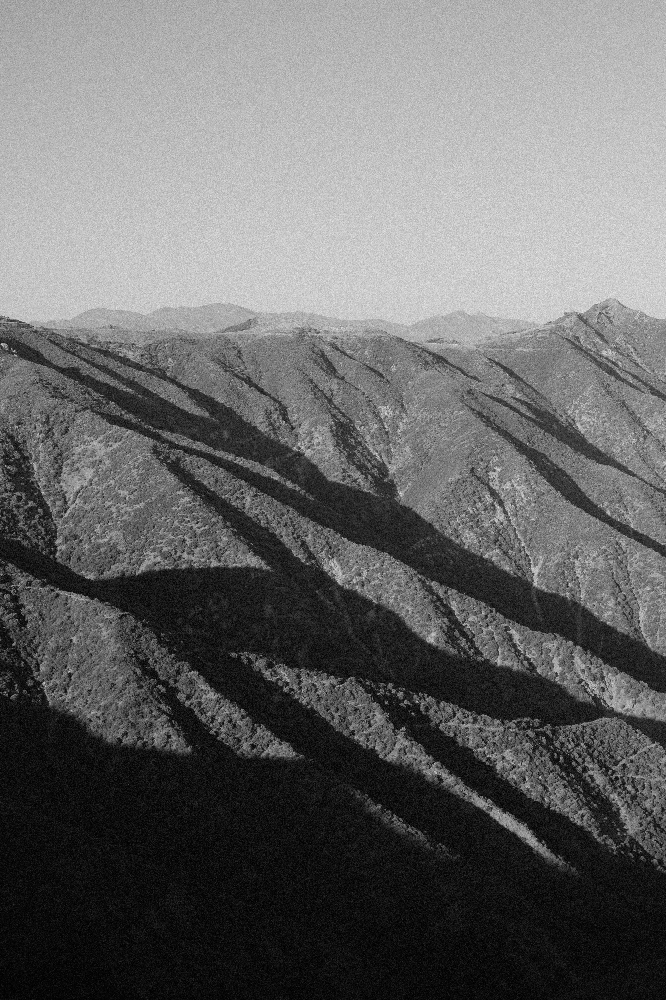

Hi, welcome to my portfolio.
Lilia Mourier
About
Environmental work shaped by coastlines, communities, and change.

I am a California-based environmental professional driven by the need to address environmental challenges that affect both people and nature. My work has taken me across riparian, estuarine, and coastal landscapes, where I have studied watershed geomorphology, salmonid fisheries, water quality, and the pressures facing developed coastlines.
I began my career in adventurous field roles across California, including service as a Watershed Stewards Program Corps Member with the California Conservation Corps in partnership with AmeriCorps. I later worked at the San Francisco Estuary Institute on applied research focused on how wastewater discharge and urbanization affect the resilience of San Francisco Bay’s water quality. That work deepened my interest in conservation planning, coastal adaptation, and the difficult choices communities face at the urban-nature interface.
I recently completed a master's degree in Environmental Science and Management at the UCSB Bren School, where I focused on conservation planning, coastal resource management, climate adaptation, and science communication. I am especially interested in using writing, mapping, data visualization, and design to help people understand changing environmental systems and make more informed, place-based decisions.



Selected Work
Explore a selection of my work.
Contact